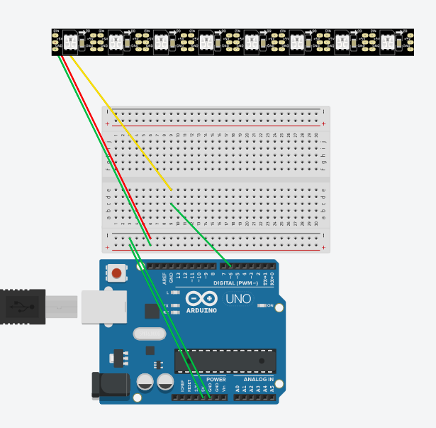

Embedded Programming
Electrical Components
Some common electrical components:
- Wires: Wires are conductors, with usually very low resistance. They are usually made out of copper with an insulator on the outside
- Switches: They are an electrical component that breaks a circuit when manually operated. They are usually made of two contacts separated by a conductor. When the conductor is closed, the cicuit is completed.
- Resistors: An electrical component which has made to have a fixed resistance to current.
- Transistors and MOSFETs: Semi-conductors that allow current to flow provided an electrical condition is met on one of the pins. They can be used as amplifiers(non-saturation) or switches(saturation)
- Integrated Circuits: Devices which are miniaturized electrical circuits. Each IC can contain thousands of other electrical components configured in a particular circuit(c)
Input
Input refer to any way any way that the computer receives data from the outside world. Some common inputs used can be a button, switch, potentiometer, ultrasensor and more. For my first try, I used a push button to test my circuit. Below, you can see me testing my circuit on ThinkerCad. I highly reccomend you using this to first test out your circuits and making sure your code all works. Then you can move on to doing your circuit in real life.
After you have done your circuit, you have to input your code into Arduino. For this circuit, I wanted the LED to light up when I press the button. To explain my code, you first have to identify where is your input for the button and LED in the Arduino. As you can see, my LED goes in 12 and button goes into 5. I also identified that at first, my LED is "low", which means its turned off. I specified that when I pressed the button, my LED is "high", where it will light up. You can copy the code below to try it out:
const int LED = 12;
const int PSW = 5;
int ledState; // current LED state
int lastSWState; // last state of the SW
void setup () {
pinMode (LED, OUTPUT);
pinMode (PSW, INPUT);
ledState = LOW; // LED initially OFF
lastSWState = HIGH; // Switch state
}
void loop() {
int reading = digitalRead(PSW);
if (reading == LOW) {
// SW was pressed
if (lastSWState == HIGH) {
// confirmed!
ledState = !ledState;
digitalWrite(LED, ledState); // toggle LED
lastSWState = LOW;
}
}
else {
// SW is not pressed
lastSWState = HIGH;
}
}
|
Output
Outputs operate similarly, but in the opposite as inputs. Some common examples of outputs can be devices such as display screens or lights, such as LED strips, RBG led light and such. To show an example, I'll show a circuit including an LED strip.
| 
|
 |
For the code, I have referenced from Adafruit's "strandtest" where you can quickkly test if your LED strip is working or not. Do note to define where is the the LED pin in the Arduino and also change your LED count to the number of LEDs in your strip currently.
#include
#ifdef __AVR__
#include < avr/power.h> // Required for 16 MHz Adafruit Trinket
#endif
#define LED_PIN 6
#define LED_COUNT 8
Adafruit_NeoPixel strip(LED_COUNT, LED_PIN, NEO_GRB + NEO_KHZ800);
void setup() {
#if defined(__AVR_ATtiny85__) && (F_CPU == 16000000)
clock_prescale_set(clock_div_1);
#endif
strip.begin(); // INITIALIZE NeoPixel strip object (REQUIRED)
strip.show(); // Turn OFF all pixels ASAP
strip.setBrightness(50); // Set BRIGHTNESS to about 1/5 (max = 255)
}
void loop() {
colorWipe(strip.Color(255, 0, 0), 50); // Red
colorWipe(strip.Color( 0, 255, 0), 50); // Green
colorWipe(strip.Color( 0, 0, 255), 50); // Blue
theaterChase(strip.Color(127, 127, 127), 50); // White, half brightness
theaterChase(strip.Color(127, 0, 0), 50); // Red, half brightness
theaterChase(strip.Color( 0, 0, 127), 50); // Blue, half brightness
rainbow(10); // Flowing rainbow cycle along the whole strip
theaterChaseRainbow(50); // Rainbow-enhanced theaterChase variant
}
void colorWipe(uint32_t color, int wait) {
for(int i=0; i< strip.numPixels(); i++) { // For each pixel in strip...
strip.setPixelColor(i, color); // Set pixel's color (in RAM)
strip.show(); // Update strip to match
delay(wait); // Pause for a moment
}
}
void theaterChase(uint32_t color, int wait) {
for(int a=0; a<10; a++) { // Repeat 10 times...
for(int b=0; b<3; b++) { // 'b' counts from 0 to 2...
strip.clear(); // Set all pixels in RAM to 0 (off)
// 'c' counts up from 'b' to end of strip in steps of 3...
for(int c=b; c< strip.numPixels(); c += 3) {
strip.setPixelColor(c, color); // Set pixel 'c' to value 'color'
}
strip.show(); // Update strip with new contents
delay(wait); // Pause for a moment
}
}
}
// Rainbow cycle along whole strip. Pass delay time (in ms) between frames.
void rainbow(int wait) {
for(long firstPixelHue = 0; firstPixelHue < 5*65536; firstPixelHue += 256) {
for(int i=0; i< strip.numPixels(); i++) { // For each pixel in strip...
int pixelHue = firstPixelHue + (i * 65536L / strip.numPixels());
strip.setPixelColor(i, strip.gamma32(strip.ColorHSV(pixelHue)));
}
strip.show(); // Update strip with new contents
delay(wait); // Pause for a moment
}
}
//
void theaterChaseRainbow(int wait) {
int firstPixelHue = 0; // First pixel starts at red (hue 0)
for(int a=0; a<30; a++) { // Repeat 30 times...
for(int b=0; b<3; b++) { // 'b' counts from 0 to 2...
strip.clear(); // Set all pixels in RAM to 0 (off)
// 'c' counts up from 'b' to end of strip in increments of 3...
for(int c=b; c< strip.numPixels(); c += 3) {
int hue = firstPixelHue + c * 65536L / strip.numPixels();
uint32_t color = strip.gamma32(strip.ColorHSV(hue)); // hue -> RGB
strip.setPixelColor(c, color); // Set pixel 'c' to value 'color'
}
strip.show(); // Update strip with new contents
delay(wait); // Pause for a moment
firstPixelHue += 65536 / 90; // One cycle of color wheel over 90 frames
}
}
}
|